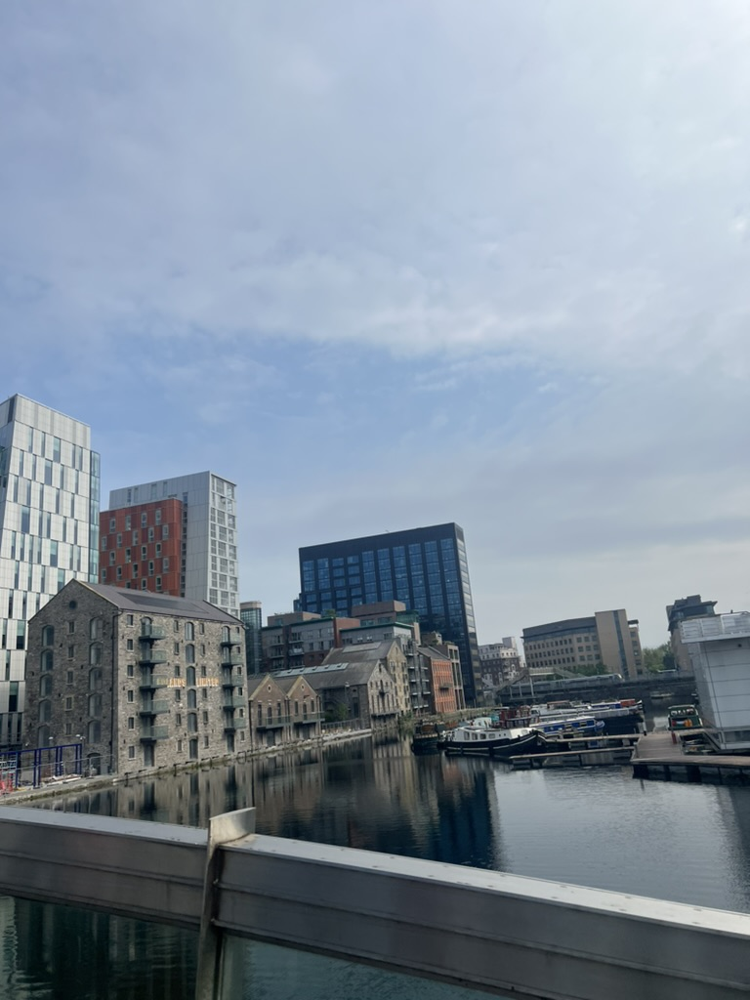
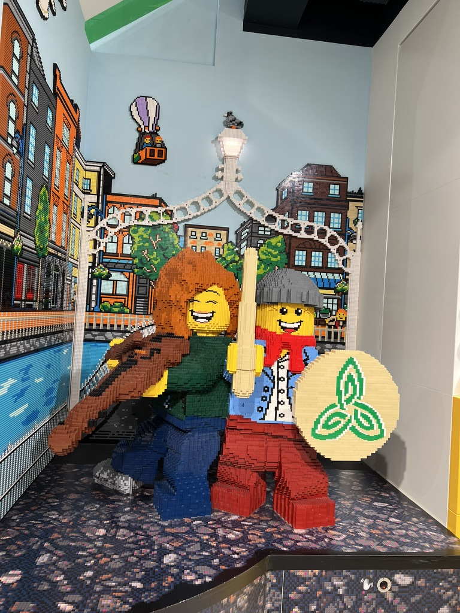
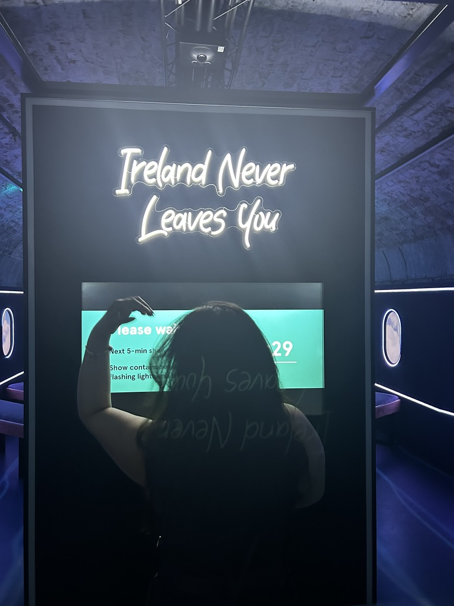
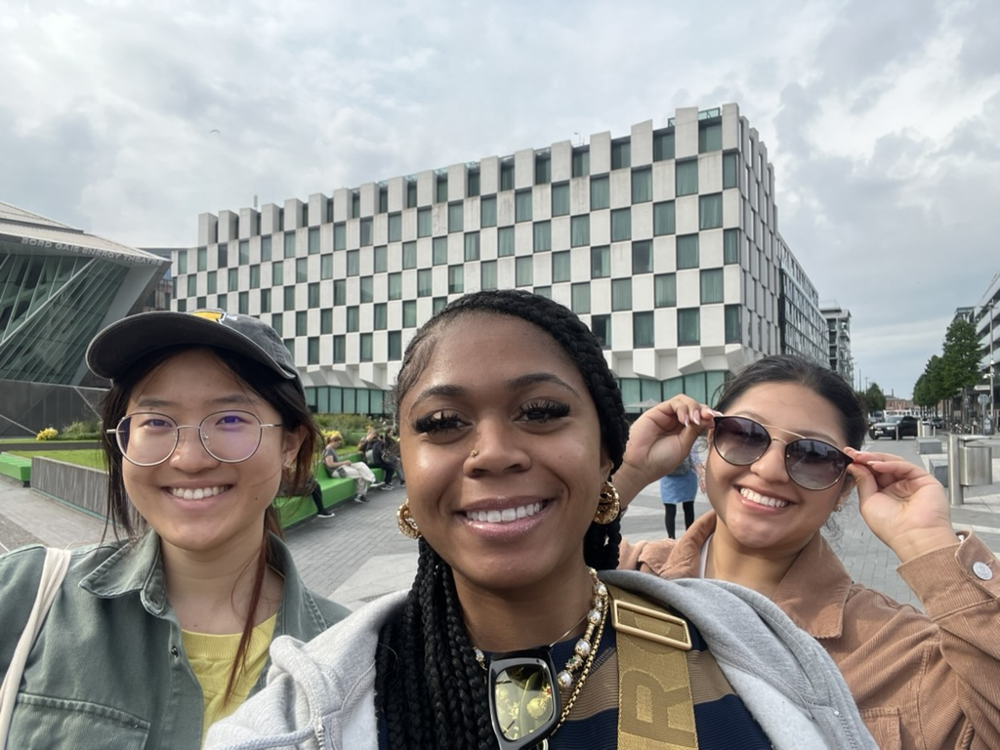
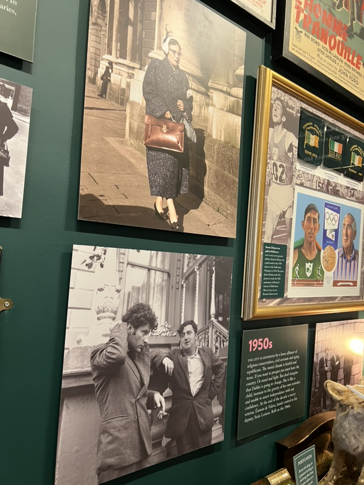

The South Dock of Dublin

Legos of Dublin

Ireland Never leaves you

Cows around the walk.

Dublin Little MuseumVideo of scenic viewsDowntown Docks
Dublin
Places to visit
Dublin is full of museums and places to try out! There are also plenty of sweet treats to indulge in. My favorite museum was the Epic Museum, which was very interactive.dditionally, don't miss out on experiencing more Irish history at the National History Museum and the Museum of Dublin.
Places to Eat
The Brazen Head offers delicious fish and chips for lunch or dinner. It is one of the oldest pubs in Dublin. Additionally, there's Monto Cafe located in the heart of bustling Camden Street, Dublin, Ireland. It's a local eatery serving succulent steak, delectable pasta, mouth-watering fresh fish, and exquisite hand-tossed wood-fired pizza.
EPIC The Irish Emigration Museum
EPIC, The Irish Emigration Museum, offers an interactive journey that goes beyond stereotypes to help you discover the true essence of Irish identity. This museum is highly interactive for visitors of all ages, ensuring engagement levels remain high throughout the experience.